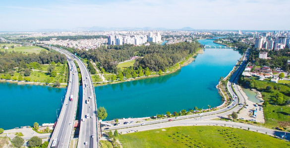

Adana – Seyhan ve Ceyhan
Toroslar'dan Akdeniz'e, Çukurova'nın Can Damarları
📄 Emre Erkmen'in çalışmasına ulaşmak için tıklayın
Merhaba Genç Coğrafyacı! Türkiye'nin en verimli ovalarından biri olan Çukurova'yı besleyen Seyhan ve Ceyhan nehirlerinin sırlarını keşfetmeye hazır mısın? Nehirlerin fısıltısını dinle, görevleri tamamla ve Çukurova'ya hayat ver! 🎧
🏆
Harikasın Coğrafyacı!
Seyhan ve Ceyhan'ın sırlarını çözdün, Çukurova'ya can suyu ve enerji verdin.